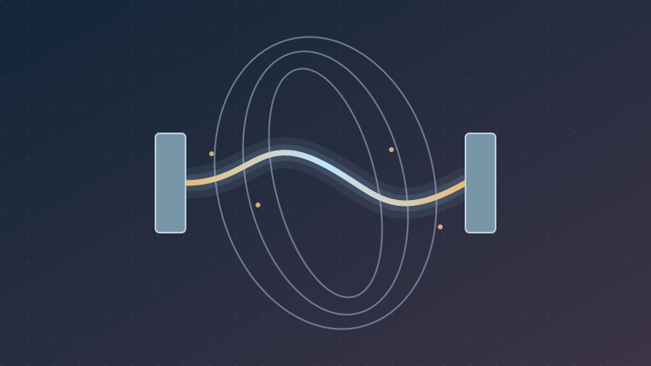
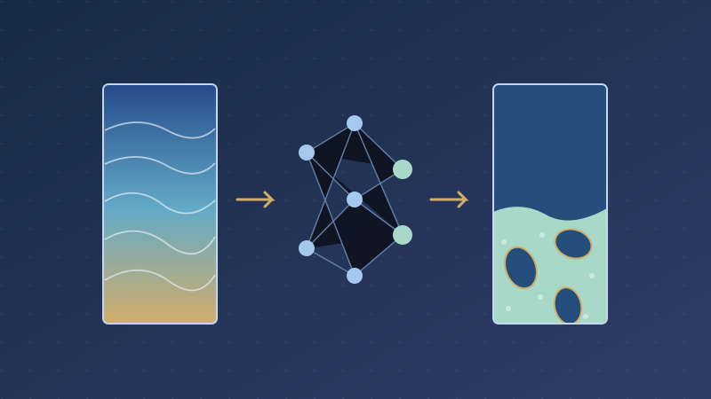
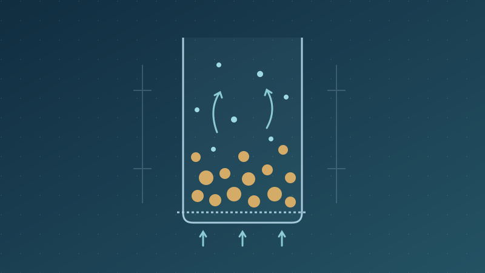

My Blog
Ideas, methods, and lessons from exploring physical systems through mathematical modeling.

From Laminar to Turbulent Arcs: Multiphysics Modeling of Arc Instability and Electrical Resistance in Electric Smelting Furnaces
How flow regime, three-dimensional arc deformation, and furnace atmosphere shape the electrical load of an electric smelting furnace.

Pressure-Guided Cross-Modal Reconstruction (PCMR) of Gas-Solid Flow Fields in Fluidized Beds
How pressure-derived features help reconstruct particle distributions and phase velocities, with millisecond inference and a path toward fluidized-bed digital twins.
What Is Multiphysics Modeling and Why Does It Matter?
How conservation laws, transport processes, and phase interactions help us understand complex engineering systems.

Understanding Fluidized Beds Through My Research
What a dual-size CFD model reveals about particle segregation, pressure fluctuations, and fine-particle entrainment.
Can AI Learn Physics? Introduction to Scientific Machine Learning
An introduction to learning from data and physical equations, with PINNs, neural operators, and examples from fluid mechanics.
Magnetohydrodynamics for Arc Plasma Modeling
How electrical current, magnetic forces, heat transfer, and fluid motion interact in a thermal plasma arc.